9. týden: Malé 'velké' CNC obrábění Week 9: Small 'Big' CNC Machining
Během devátého týdne bylo úkolem vytvořit 2.5D model a následně ho vyfrézovat z materiálu POM‑C. During the ninth week, the task was to create a 2.5D model and then mill it from POM‑C material.
Forma na silikonové „botičky“ pro hexapoda Mold for silicone "shoes" for the hexapod
Tento týden jsem se rozhodl vyrobit formu pro odlévání silikonových návleků na nohy hexapoda. Tyto návleky by měly zlepšit přilnavost k povrchu, což hexapodovi umožní stabilnější pohyb bez podkluzování. Výsledný návlek by měl vypadat takto: This week I decided to make a mold for casting silicone sleeves for the hexapod's legs. These sleeves should improve grip on the surface, allowing the hexapod more stable movement without slipping. The resulting sleeve should look like this:

Návrh modelu Model design
Formu jsem navrhl v programu Fusion 360. Skládá se ze dvou částí, které do sebe zapadají pomocí čtyř vodicích kolíků umístěných v rozích. Silikon se bude nalévat do velkého otvoru ve spodní části formy. Prostřední kolík ve vrchní části pak zasahuje do dutiny se silikonem a slouží k vytvoření vnitřního otvoru v návleku (pro nasunutí na nohu robota). Přebytečný silikon může odtékat čtyřmi kanálky. I designed the mold in Fusion 360. It consists of two parts that fit together using four guide pins located in the corners. The silicone will be poured into a large hole in the bottom part of the mold. The middle pin in the top part extends into the silicone cavity and serves to create the inner hole in the sleeve (to slide onto the robot's leg). Excess silicone can flow out through four channels.
Rozměry formy jsou navrženy tak, aby vnitřní otvor v silikonovém návleku měřil na délku 13 mm a měl průměr 6 mm. Celková výška "botičky" bude 16 mm s tloušťkou stěn 2 mm. The dimensions of the mold are designed so that the inner hole in the silicone sleeve measures 13 mm in length and 6 mm in diameter. The total height of the "shoe" will be 16 mm with a wall thickness of 2 mm.
Aby vrchní díl s kolíky zapadl do otvorů ve spodním dílu a pevně v nich držel, bylo nutné zvolit vhodnou vůli. Průměr otvorů jsem proto nastavil na 6 mm a průměr kolíků na 5,85 mm. Tento design kolíků se však ukázal jako nevhodný a obě části formy do sebe zpočátku nezapadaly. Vůle totiž byla příliš malá a navíc fréza zanechala kolíky na začátku užší než u základny. To mohlo být způsobeno ohýbáním materiálu během frézování. Příště bych zvolil větší vůli a kratší kolíky. For the top part with pins to fit into the holes in the bottom part and hold firmly, it was necessary to choose a suitable clearance. Therefore, I set the hole diameter to 6 mm and the pin diameter to 5.85 mm. However, this pin design proved unsuitable, and initially, the two parts of the mold did not fit together. The clearance was too small, and moreover, the milling cutter left the pins narrower at the tip than at the base. This could have been caused by material bending during milling. Next time, I would choose a larger clearance and shorter pins.
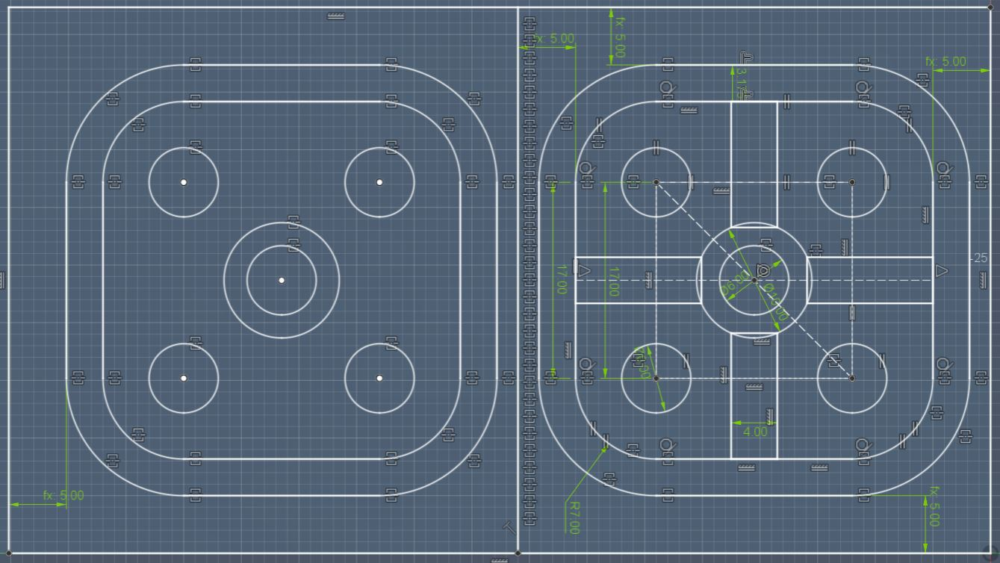
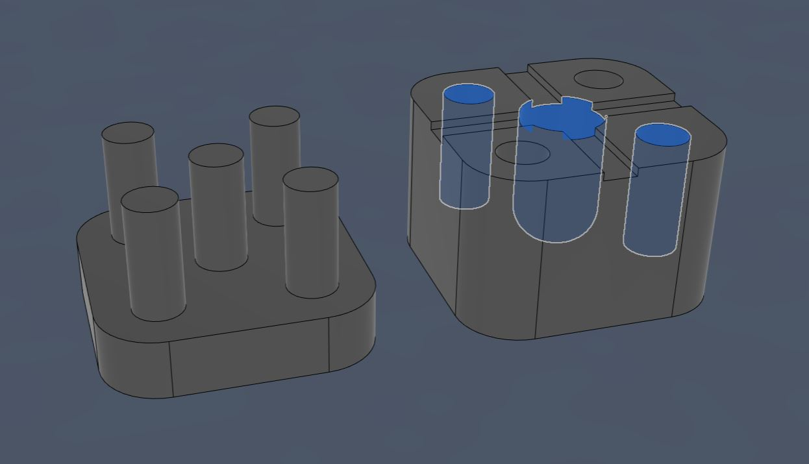
Návrh procesu frézování Milling process design
Proces frézování jsem připravil v pracovním prostředí Manufacture ve Fusion 360. Prvním krokem bylo stažení Fusion Machine Files, Tool Files a Post Processoru pro frézku Makera Carvera Air, na které budu formu vyrábět. Tyto soubory slouží pro přesnou simulaci frézování, správné vygenerování G-kódu a obsahují parametry použitých fréz. Na odkazované stránce se kromě samotných souborů nachází i návod k jejich importu do Fusionu. I prepared the milling process in the Manufacture workspace in Fusion 360. The first step was downloading the Fusion Machine Files, Tool Files and Post Processor for the Makera Carvera Air milling machine, on which I will make the mold. These files serve for accurate milling simulation, correct generation of G-code, and contain the parameters of the used milling cutters. On the linked page, besides the files themselves, there are also instructions for importing them into Fusion.
Stažené soubory: Downloaded files:
- Post processor: Carvera.cps Post processor: Carvera.cps
- Definice stroje: Makera.Carvera.Air.3-axis.Community.Version.1.4.2.f3d Machine definition: Makera.Carvera.Air.3-axis.Community.Version.1.4.2.f3d
- Definice nástrojů: caveraTools_032226.zip Tool definition: caveraTools_032226.zip
Z knihovny nástrojů jsem využíval převážně frézu 3.175 mm flat (Spiral O 3.175*25 mm) s přednastaveným profilem pro plast (Plastic). V tomto profilu jsem upravil Spindle speed (otáčky vřetene) na 12000 rpm a Ramp feedrate na 600 mm/min. Ostatní rychlosti zůstaly beze změny. Pro vytvoření chamferů (srážení hran) jsem použil nástroj 3.175 mm 45º chamfer (Chamfering Bit - 1/8" Shank). From the tool library, I mostly used the 3.175 mm flat (Spiral O 3.175*25 mm) end mill with a preset profile for plastic (Plastic). In this profile, I adjusted the Spindle speed to 12000 rpm and the Ramp feedrate to 600 mm/min. The other speeds remained unchanged. To create chamfers, I used the 3.175 mm 45º chamfer (Chamfering Bit - 1/8" Shank) tool.
Druhým krokem bylo nastavení v menu Setup. Zde jsem použil následující parametry: The second step was setting up the Setup menu. Here I used the following parameters:
- Machine: .f3d soubor stažený v předchozím kroku. Machine: The .f3d file downloaded in the previous step.
- Setup: Milling (frézování). Setup: Milling.
- Work Coordinate System: Zde je nutné definovat počátek a orientaci souřadnicového systému. Orientaci jsem zvolil shodnou s mým modelem (Model Orientation) a počátek jsem umístil do levého předního spodního rohu bloku materiálu. Work Coordinate System: Here it is necessary to define the origin and orientation of the coordinate system. I chose an orientation identical to my model (Model Orientation) and placed the origin in the left front bottom corner of the material block.
- Stock (Polotovar): Velikost materiálu jsem nastavil podle reálných rozměrů poskytnuté desky POM-C - 110 × 105 × 22 mm. Model formy jsem umístil k levému přednímu kraji desky s odsazením 5 mm od okrajů. Jelikož se výška materiálu v praxi liší zhruba o ± 0,5 mm a povrch nemusí být dokonale rovný, zarovnal jsem model ke spodnímu okraji desky. Vrchní cca 2 mm se odfrézují, díky čemuž budou dotykové plochy obou částí formy rovné. Stock: I set the material size according to the real dimensions of the provided POM-C board - 110 × 105 × 22 mm. I placed the mold model at the front left edge of the board with a 5 mm offset from the edges. Since the material height in practice varies by about ± 0.5 mm and the surface may not be perfectly flat, I aligned the model to the bottom edge of the board. The top approximately 2 mm will be milled off, making the contact surfaces of both mold parts perfectly flat.
- Part Position: Levý přední spodní roh desky jsem umístil do levého předního rohu pracovního prostoru frézky. Part Position: I placed the left front bottom corner of the board into the left front corner of the milling machine's workspace.
- Zbylá nastavení zůstala na výchozích hodnotách. The remaining settings were left at their default values.
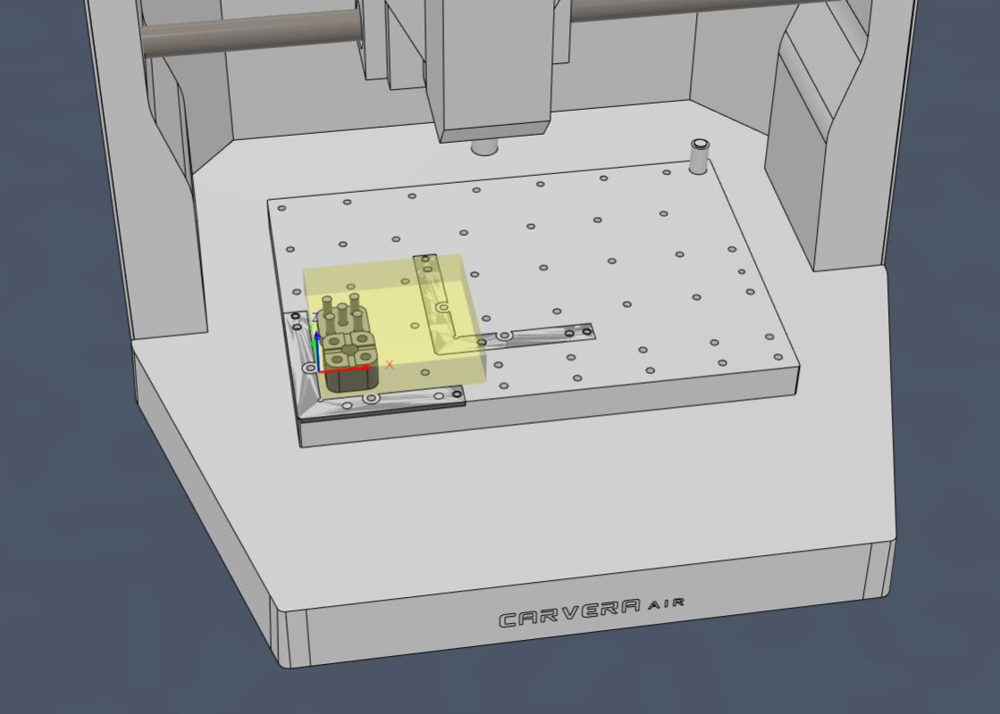
Třetím krokem byl návrh samotných frézovacích operací. Začal jsem 2D operací Face, která zarovná horní plochy formy tím, že odebere vrchních cca 2 mm materiálu. Nastavení operace Face bylo následující: The third step was designing the milling operations themselves. I started with a 2D Face operation, which flattens the top surfaces of the mold by removing the top approx. 2 mm of material. The Face operation settings were as follows:
- Tool: 3.175 mm flat (Spiral O 3.175*25 mm) Tool: 3.175 mm flat (Spiral O 3.175*25 mm)
- Clearance height: 3 mm from Retract height Clearance height: 3 mm from Retract height
- Retract height: 2 mm from Stock top Retract height: 2 mm from Stock top
- Feed height: 2 mm from Top height Feed height: 2 mm from Top height
- Top height: 0 mm from Stock height Top height: 0 mm from Stock height
- Bottom height: 0 mm from Model top Bottom height: 0 mm from Model top
- Stepover: 3 mm Stepover: 3 mm
- Zbylé nastavení jsem nechal na výchozích hodnotách. I left the remaining settings at their default values.
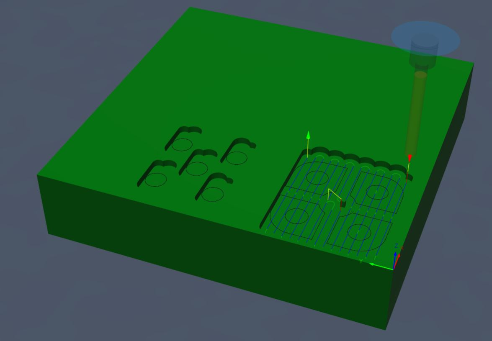
Pro odstranění materiálu kolem kolíků, vytvoření čtyř odtokových drážek a vyfrézování hlavní dutiny formy jsem použil 2D operaci Pocket s tímto nastavením: To remove material around the pins, create four drainage channels, and mill the main cavity of the mold, I used a 2D Pocket operation with these settings:
- Tool: 3.175 mm flat (Spiral O 3.175*25 mm) Tool: 3.175 mm flat (Spiral O 3.175*25 mm)
- Clearance height: 3 mm from Retract height Clearance height: 3 mm from Retract height
- Retract height: 2 mm from Stock top Retract height: 2 mm from Stock top
- Feed height: 2 mm from Top height Feed height: 2 mm from Top height
- Top height: 0 mm from Stock top Top height: 0 mm from Stock top
- Bottom height: 0 mm from Selected contour(s) Bottom height: 0 mm from Selected contour(s)
- Maximum Stepover: 3 mm Maximum Stepover: 3 mm
- Multiple Depths: Ano Multiple Depths: Yes
- Maximum Roughing Stepdown: 3 mm Maximum Roughing Stepdown: 3 mm
- Stock to Leave: Ne Stock to Leave: No
- Lead-In a Lead-Out: Ne Lead-In and Lead-Out: No
- Ramp type: Helix Ramp type: Helix
- Ramp Angle: 5 deg Ramp Angle: 5 deg
- Zbylé nastavení jsem nechal na výchozích hodnotách. I left the remaining settings at their default values.
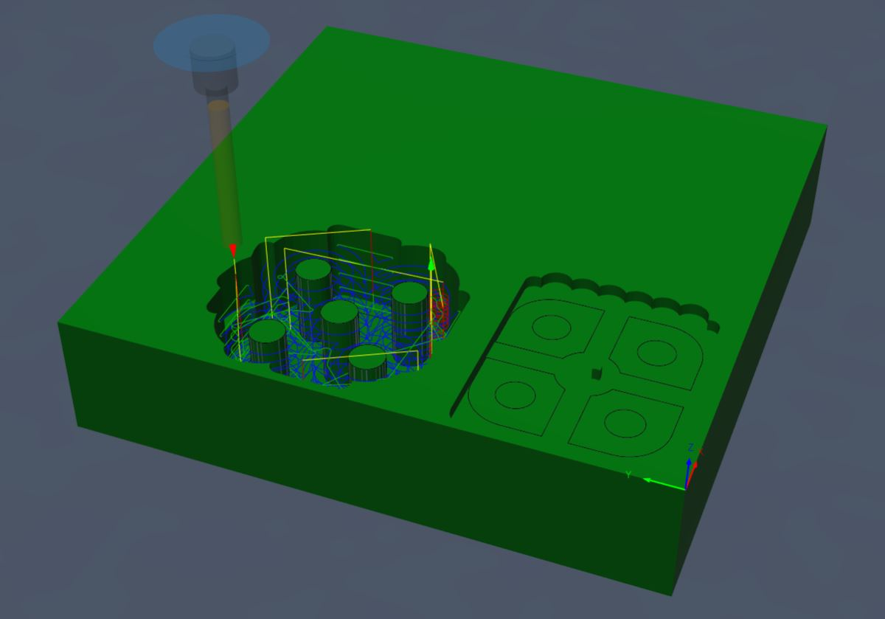
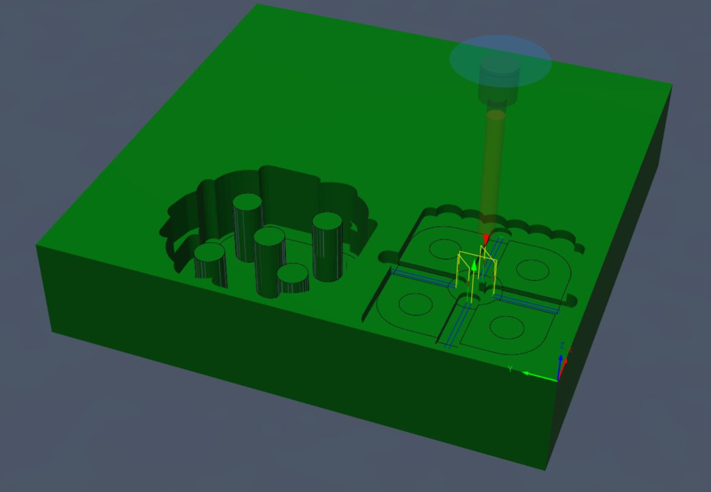
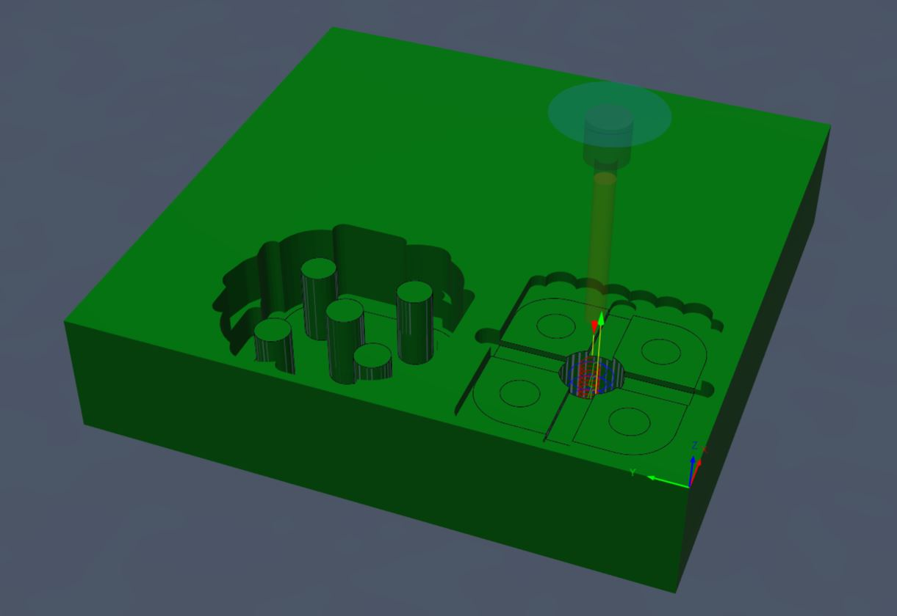
Pro správný tvar silikonové botičky bylo nutné zaoblit dno hlavního otvoru formy. Jelikož jsem neměl k dispozici frézu s kulovým koncem (ball nose), musel jsem si vystačit s aproximací zaoblení. K tomu posloužila 3D operace Contour a standardní plochá fréza, která povrch vytvořila množstvím drobných kruhových řezů: For the correct shape of the silicone shoe, it was necessary to round the bottom of the main hole of the mold. Since I didn't have a ball nose end mill available, I had to make do with an approximation of the rounding. A 3D Contour operation and a standard flat end mill, which created the surface with a number of small circular cuts, served this purpose:
- Tool: 3.175 mm flat (Spiral O 3.175*25 mm) Tool: 3.175 mm flat (Spiral O 3.175*25 mm)
- Clearance height: 10 mm from Retract height Clearance height: 10 mm from Retract height
- Retract height: 5 mm from Stock top Retract height: 5 mm from Stock top
- Top height: 0 mm from Selection Top height: 0 mm from Selection
- Bottom height: 0 mm from Model bottom Bottom height: 0 mm from Model bottom
- Maximum Stepdown (horizontální krok pro zjemnění oblouku): 0.05 mm Maximum Stepdown (horizontal step to smoothen the arc): 0.05 mm
- Zbylé nastavení jsem nechal na výchozích hodnotách. I left the remaining settings at their default values.
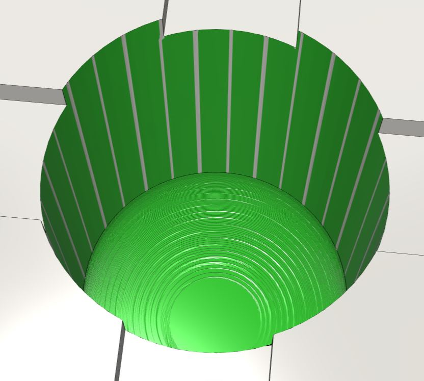
Čtveřici otvorů pro vodicí kolíky jsem vytvořil pomocí 2D operace Bore s tímto nastavením: I created the four guide pin holes using a 2D Bore operation with the following settings:
- Tool: 3.175 mm flat (Spiral O 3.175*25 mm) Tool: 3.175 mm flat (Spiral O 3.175*25 mm)
- Clearance height: 3 mm from Retract height Clearance height: 3 mm from Retract height
- Retract height: 2 mm from Stock top Retract height: 2 mm from Stock top
- Feed height: 2 mm from Top height Feed height: 2 mm from Top height
- Top height: 0 mm from Hole top Top height: 0 mm from Hole top
- Bottom height: 0 mm from Hole bottom Bottom height: 0 mm from Hole bottom
- Ramp Angle: 5 deg Ramp Angle: 5 deg
- Zbylé nastavení jsem nechal na výchozích hodnotách. I left the remaining settings at their default values.
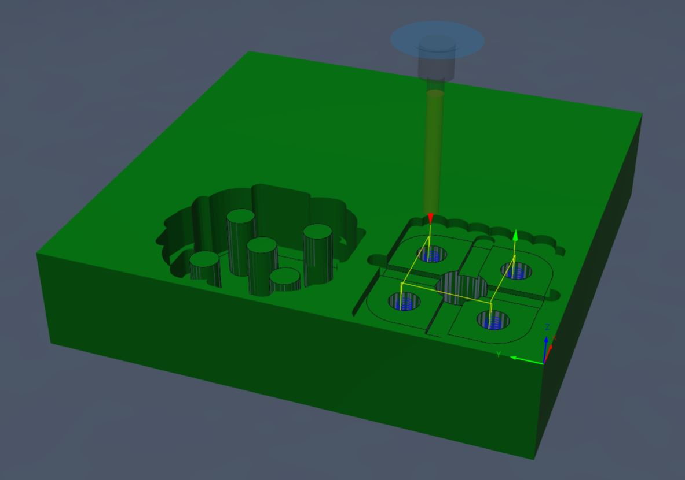
Vyříznutí obrysů formy z bloku materiálu jsem provedl pomocí 2D operace Contour. Důležité bylo zapnout můstky (Tabs), aby se díl na konci frézování neuvolnil a nepoškodil nástroj. I cut out the mold outlines from the material block using a 2D Contour operation. It was important to enable tabs so the part wouldn't come loose at the end of milling and damage the tool.
- Tool: 3.175 mm flat (Spiral O 3.175*25 mm) Tool: 3.175 mm flat (Spiral O 3.175*25 mm)
- Tabs (můstky přidržující obrobek): Ano Tabs (bridges holding the workpiece): Yes
- Tab Width: 3.175 mm Tab Width: 3.175 mm
- Tab Height: 1 mm Tab Height: 1 mm
- Clearance height: 3 mm from Retract height Clearance height: 3 mm from Retract height
- Retract height: 2 mm from Stock top Retract height: 2 mm from Stock top
- Feed height: 2 mm from Top height Feed height: 2 mm from Top height
- Top height: 0 mm from Stock top Top height: 0 mm from Stock top
- Bottom height: 0 mm from Selected contour(s) Bottom height: 0 mm from Selected contour(s)
- Multiple Depths: Ano Multiple Depths: Yes
- Maximum Roughing Stepdown: 3 mm Maximum Roughing Stepdown: 3 mm
- Ramping Angle: 5 deg Ramping Angle: 5 deg
- Zbylé nastavení jsem nechal na výchozích hodnotách. I left the remaining settings at their default values.
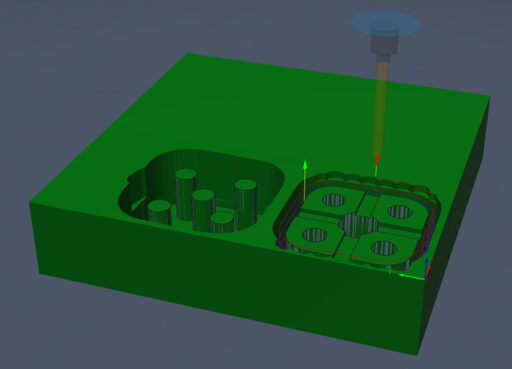
Poslední operací byl 2D Chamfer pro mírné zkosení špiček vodicích kolíků, což usnadní jejich zasouvání do spodní části formy: The last operation was a 2D Chamfer to slightly bevel the tips of the guide pins, which will make them easier to insert into the bottom part of the mold:
- Tool: 3.175 mm 45º chamfer (Chamfering Bit - 1/8" Shank) Tool: 3.175 mm 45º chamfer (Chamfering Bit - 1/8" Shank)
- Clearance height: 3 mm from Retract height Clearance height: 3 mm from Retract height
- Retract height: 2 mm from Stock top Retract height: 2 mm from Stock top
- Feed height: 2 mm from Top height Feed height: 2 mm from Top height
- Top height: 0 mm from Stock top Top height: 0 mm from Stock top
- Bottom height: 0 mm from Selected contour(s) Bottom height: 0 mm from Selected contour(s)
- Chamfer Width: 0.5 mm Chamfer Width: 0.5 mm
- Chamfer Tip Offset: 0.3 mm Chamfer Tip Offset: 0.3 mm
- Zbylé nastavení jsem nechal na výchozích hodnotách. I left the remaining settings at their default values.
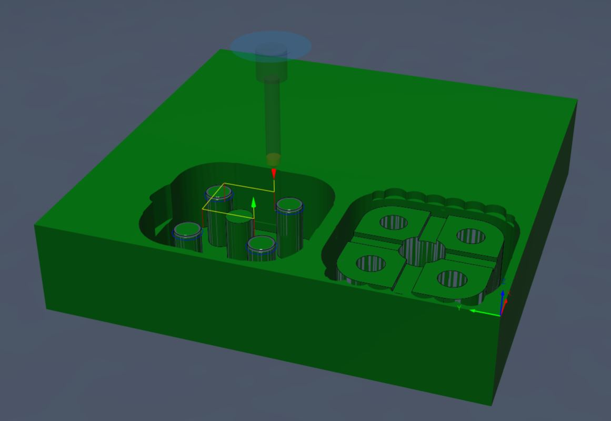
Seznam operací a ukázka simulace: List of operations and simulation:
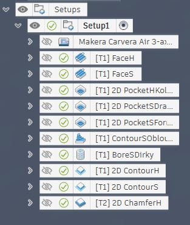
Frézování Milling
K výrobě posloužila školní frézka Makera Carvera Air. Mezi podložku stroje a blok plastu POM-C jsem umístil obětní destičku (spoil board), která chrání podložku před zaříznutím nástroje. Polotovar jsem zafixoval pomocí dvou šroubovacích upínek. The school's Makera Carvera Air milling machine was used for production. I placed a spoil board between the machine bed and the POM-C plastic block to protect the bed from the tool cutting into it. I secured the stock using two screw clamps.
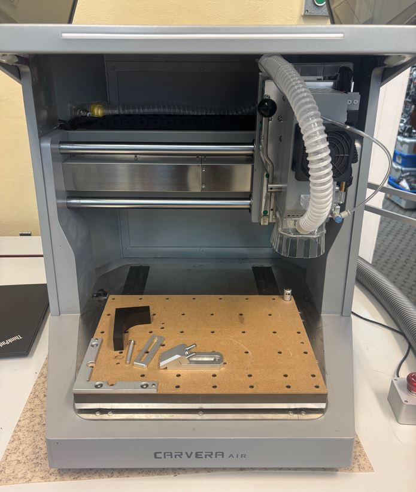
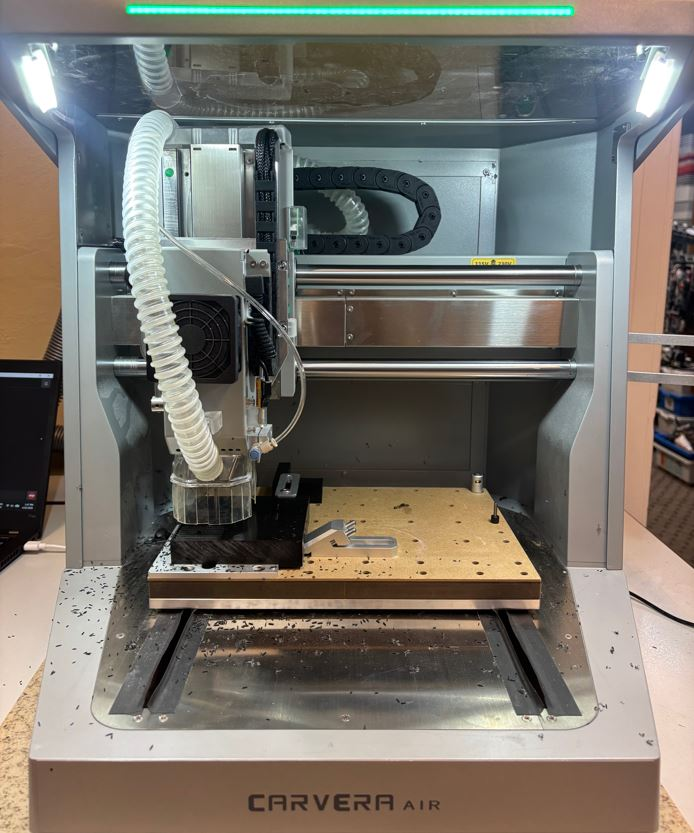
Pomocí dříve nainstalovaného post processoru jsem vygeneroval .cnc soubor (G-kód). Ten jsem přes flash disk přenesl do počítače připojeného k frézce a načetl jej do softwaru Carvera Controller, přes který se stroj řídí. Using the previously installed post processor, I generated a .cnc file (G-code). I transferred this via a flash drive to the computer connected to the milling machine and loaded it into the Carvera Controller software, through which the machine is operated.
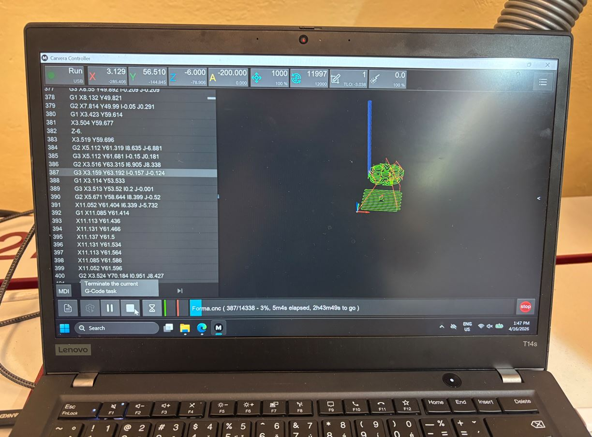
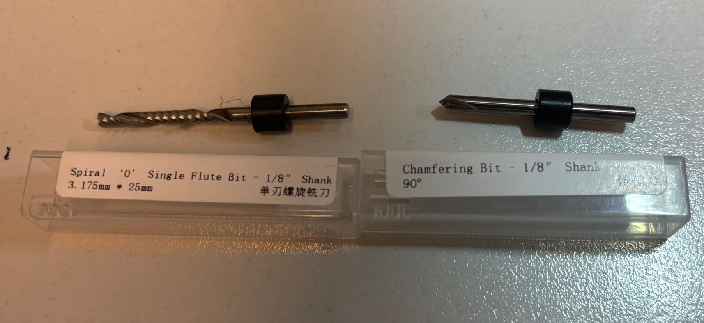
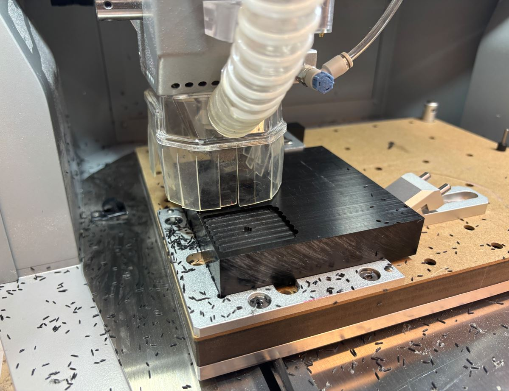
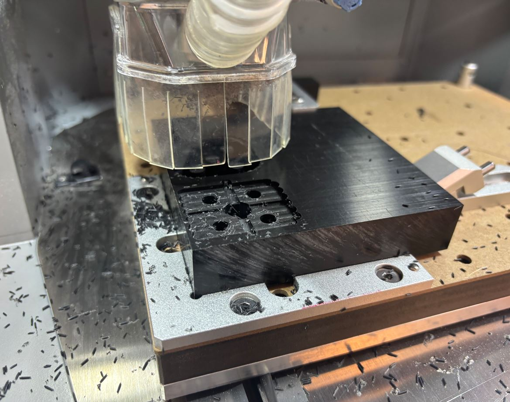
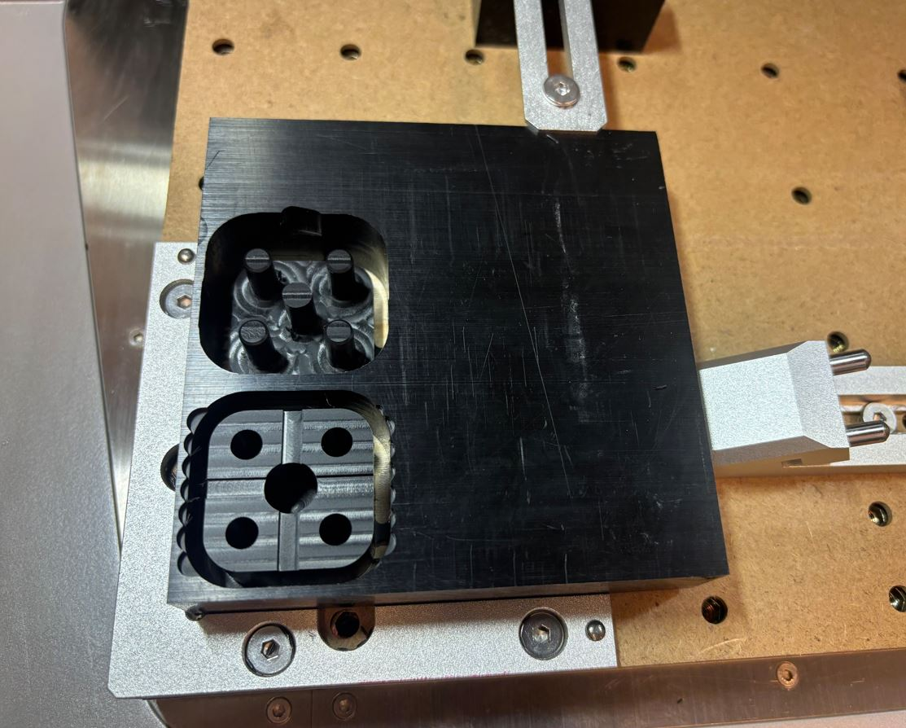
Dokončovací operace (post-processing) Finishing operations (post-processing)
Formu jsem z plastové desky uvolnil přecvaknutím můstků pomocí malých štípaček. Zbytky materiálu a drobné nepřesnosti na hranách jsem následně začistil jemným brusným papírem. I released the mold from the plastic board by snapping the tabs using small wire cutters. I then cleaned up the remaining material and minor inaccuracies on the edges with fine sandpaper.
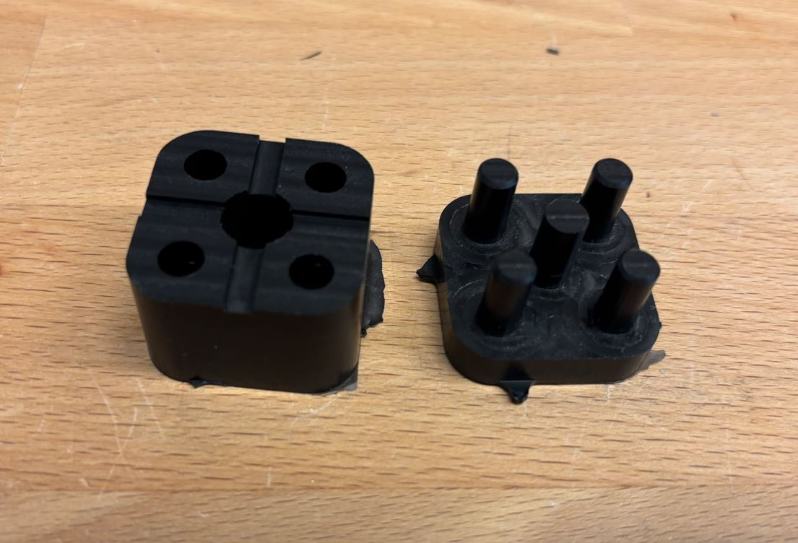
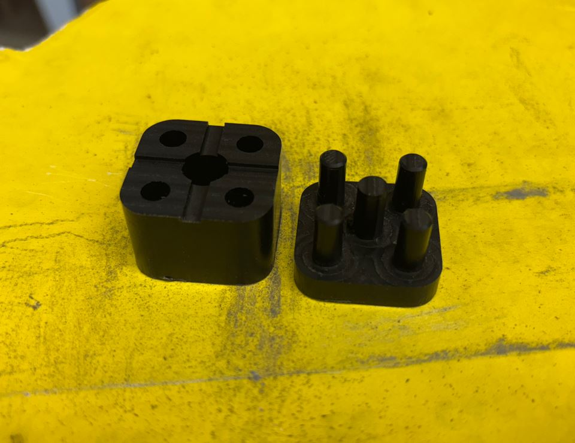
Jak jsem zmiňoval v úvodu, vyfrézované díly do sebe nezapadaly. Rozhodl jsem se proto vodicí otvory zvětšit pomocí 6 mm vrtáku. Po tomto kroku se do sebe formy daly zasunout, ale jen do poloviny délky kolíků (protože kolíky byly směrem k základně širší). Otvory jsem tedy zhruba do poloviny jejich hloubky ještě rozšířil 8 mm vrtákem. As I mentioned in the introduction, the milled parts did not fit together. Therefore, I decided to enlarge the guide holes using a 6 mm drill bit. After this step, the molds could be inserted into each other, but only up to half the length of the pins (because the pins were wider towards the base). So I widened the holes up to about half their depth with an 8 mm drill bit.
Nyní už do sebe díly zapadají velmi dobře a při zasouvání kladou příjemný lehký odpor až v posledních třech milimetrech rozsahu. K tomu však dochází pouze v jedné konkrétní orientaci dílů formy. Správné natočení dílů jsem označil vyvrtáním malého značkovacího otvoru na boku obou polovin. Jedinou vadou zůstalo poškrábání povrchu od upnutí do svěráku během ručního převrtávání děr. Now the parts fit together very well and offer a pleasant, slight resistance when inserted, up until the last three millimeters of the range. However, this only happens in one specific orientation of the mold parts. I marked the correct alignment of the parts by drilling a small marker hole on the side of both halves. The only flaw remaining was the scratching of the surface from clamping it in the vise during the manual redrilling of the holes.
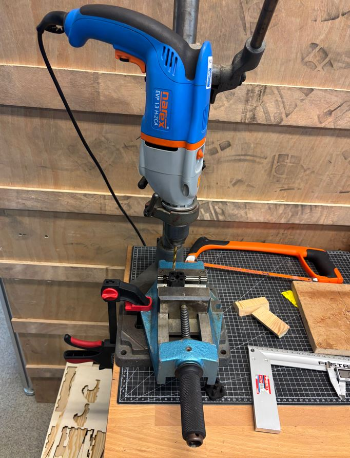
Výsledná forma: The resulting mold: